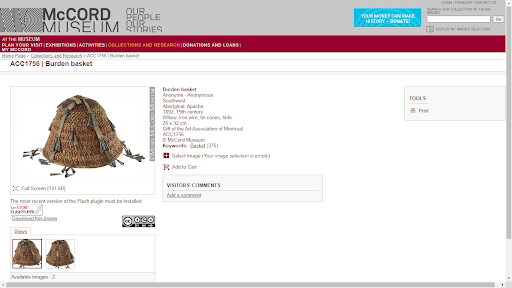

The McCord museum is situated in Montreal, Canada and was created to preserve and promote Canadian history. The museum was initially founded in 1921 by David Ross McCord and today, the museum holds an impressive collection of almost 1,500,000 artifacts of significance to Canadian history. The online database was created in partnership with and exhibits artefacts from, seven other museums.These include: Centre d’études acadiennes de l’Université de Moncton , Guelph Museums, Musée minéralogique et minier de Thetford Mines,New Brunswick Museum, North Vancouver Museum and Archives, Sir Alexander Galt Museum and Archives, Musée acadien de l’Université de Moncton.
The collection contains objects and artefacts that have been donated to the museum, purchased by the museum or gifted to the people who have then donated them to the museum. This information is available and listed - for most items as this is not provided for all items - beside each item when users click to view. This is alongside information about the size of the item, the author or creator and an assumed if not exact year the artefact would have been created. Interestingly, the creator of almost every artefact in the Indigeneous Cultures section of the archive is listed as anonymous, even entries from the mid to late twentieth century. This is interesting because the archive is able to list the provenance of each piece with regards to who it was gifted to, purchased by or who donated it. However there are a number of possible reasons for this.
The collection seems to be created for people who have some knowledge of the history of Canada and Candian Culture and wish to know more, as the archive provides an incredibly wide range of artefacts which could be overwhelming for those who aren't searching for anything specific. This enables visitors access to several different aspects of Canadian history, including but not limited to: fashion, art and photography. It is perhaps, due to this wide range of artifacts that visitors are put at a slight disadvantage. There are only detailed descriptions for some items in the collection however, most of those that don’t have a description can be figured out from the title. Though this does not completely affect the visitor’s experience, this can make a visit to the online collection slightly repetitive if all viewers are seeing is the basic information listed alongside a picture.
The collection - especially taking the size into consideration- was possibly put together by teams including those at the seven different museums that collaborated to make this a reality. For collections such as the indigenous cultures collection, especially with it being sourced from several different indigenous communities and how artifacts from communities such as these have been collected historically; colonialism could be suggested as one of the conditions of possibility.
The archive is initially separated into its collections: Documentary Art, Dress, Fashion and Textiles, Indigenous Cultures, Material Cultures, Photography and Archives. Visitors can select which collection they wish to view and navigate through this collection. The museum uses keyword tags, visitors can use these to view similar items including those from other collections.
The McCord Museum has a very impressive collection of artefacts that allows the visitor to learn more about the history of Canada. However the layout of the site can require users to go through in some cases, 234 pages of results! The site could benefit from a change in layout where perhaps more items are on each page, this would cut down the amount of pages of results per collection.Overall, the different collections are interesting and quite educational.